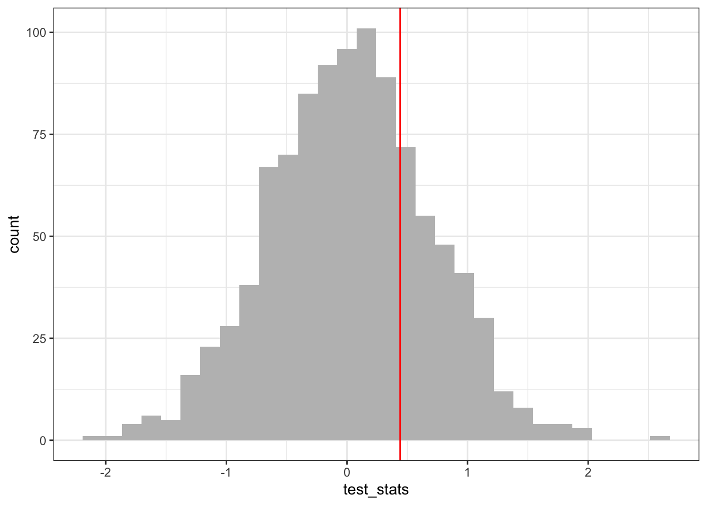

In the introduction to inference lecture, we discussed the steps researchers take to make decisions about competing hypothesis from data. This field of statistics is called hypothesis testing.
12.1 A quick review
To conduct a hypothesis test at significance level \(\alpha\), one does the following:
State the null and alternative hypothesis (\(H_0\) and \(H_1\), respectively) and significance level \(\alpha\). The significance level is the probability of a false positive (rejecting the null hypothesis) given the null hypothesis holds. \(\alpha = 0.05\) is the most common choice of significance level.
Collect data \(X_1,\dots,X_n\), possibly with knowledge of the sample size \(n\) required to achieve a certain power. Power is the probability of a true positive, given the null hypothesis is false.
Calculate the realized value \(s\) of a test statistic \(S\) from the data. The test statistic must have a known distribution under the null hypothesis.
Compute the probability of observing the realized value of the test statistic or something more extreme, given the null hypothesis is true, i.e., \(p = \Pr(S > s | H_0)\). This probability is called a \(p\) value. If \(p < \alpha\), we reject the null hypothesis at significance level \(\alpha\) and, if not, we fail to reject \(H_0\).
In the intro to inference lecture, we applied the likelihood ratio test to simulated data. We also discussed \(t\) tests (a special case of the LRT). In Assignment 3, you were asked to preform a \(t\)-test to examine whether beaver’s body temperature differ by activity level. These are not the only tests you will see in ecology and evolution papers. In these notes, we describe two tests you may see in the literature.
12.2 The chi square test
Suppose we count the number of individuals in a population that carry an allele at a specific locus. The number of individuals with this allele could be modeled as a realization of Binomial distribution with \(n\) trials and success probability \(p\), i.e., \(Y \sim \text{Binomial}(n,p)\). (Binomial random variables count the number of successes in some number of trials; in the context of the example above, if any individual carries the allele of interest, we count that as a success.) A \(\chi^2\) test determines which of the following hypothesis is consistent with the data: \(H_0 \colon p = p_0\) vs \(H_1 \colon p \neq p_0\). In words, the null hypothesis is that the probability of carrying the allele of interest is \(p_0\) and the alternative hypothesis is that is not\(p_0\).1 To conduct a test of these hypotheses, one must calculate the value of the test statistic
using the observed number of individuals that carry the allele of interest. Under the null hypothesis, \(S\) has an approximate \(\chi^2\) distribution one degree of freedom. Simplifying this expression, one can write the test statistic in another way that is commonly used:
where the numerator in the first term corresponds to the \(\#\) of individuals carrying the allele (\(=Y\)) minus the number of individuals that are expected to carry the allele under the null hypothesis (\(=np_0)\). The denominator is the number expected to carry the allele. Similarly, in the second term, we have the number of individuals sampled that do not carry the allele (\(=n-Y\)) minus the number of individuals that are expected to not carry the allele (\(n(1-p_0)\)).
If the probability of observing a test statistic more extreme than
is \(< \alpha\), then we reject the null hypothesis. (The reason being that we are unlikely to live in a world where the null hypothesis is true if the test statistic does not line up with what is expected under the null hypothesis.) Tables of \(\chi^2\) cutoff values are sometimes used to determine the \(p\)-value (i.e., the probability of observing something more extreme than the test statistic that was calculated), but is more convenient to do the calculation in R.
In the following code chunk, we test \(H_0 \colon p \neq 0.4\) vs \(H_1 \colon p \neq 0.4\) by calculating the test statistic and \(p\) value. Data is simulated.
n <-100# this is the population (and sample) sizeY <-rbinom(1, size = n, prob =0.45) # prob is the true value of p in this case!Y # this is the number individuals in the pop with the allele
[1] 44
expected_carrying_allele <-100*0.4# number individuals expected to carry the allele under H0: p = 0.4expected_NOT_carrying_allele <-100*(1-0.4)# number individuals expected to NOT carry the allele under H0: p = 0.4S <- (Y-expected_carrying_allele)^2/expected_carrying_allele + ((n-Y)-expected_NOT_carrying_allele)^2/expected_NOT_carrying_allelepchisq(S, df =1, lower.tail = F) # since p > 0.05, we fail to reject the null hypothesis
[1] 0.4142162
Play around with this code to see when, depending on \(p_0\), the true value of \(p\) used to simulate the data, and the sample size, the \(p\)-value is \(< \alpha = 0.05\).
12.3 Permutation tests
Many ecological and evolutionary questions ask: is the observed pattern different than what we would expect by random chance? Permutation tests (sometimes called randomization tests) allow us to test whether the observed data are different from a random distribution generated by reordering our observed data. If the pattern is random, then it should be just as likely as any other pattern generated by reordering the data. If it is not random, then it should occur more or less frequently than we expect under this distribution. The key step of a permutation test is to generate a null distribution by shuffling the data. In the following example of a permutation test, we shuffle observations between groups to test if the group means are different.
The steps for a permutation test of the difference between group means is as follows:
Calculate the value of a test statistic (e.g., the difference in means, \(t\) statistic) given data \(X_1,\dots,X_n\) for the first group and \(Y_1,\dots,Y_n\) for the second group.
Randomly reshuffle observations among the treatment groups, each time calculating a test statistic.
Repeat step (2) multiple times, generating a distribution of test-statistics.
Calculate the proportion of times the actual test statistic is outside the distribution of test-statistics.
We will perform the above steps on simulated data. Imagine we venture to South America and collect 30 male and 30 female Hercules beetles. We brought the beetles back to the lab and measured the width of their bodies at the largest point. The question we are interested in is: Do male and female Hercules beetles differ in body width? We will simulate body width data that is normally distributed. Our test statistic will be the difference in group means.
df_males <-data.frame(width =rnorm(30, mean=17, sd=3), sex ="male")df_females <-data.frame(width =rnorm(n=30, mean=16, sd=2), sex ="female")df_body_widths <-rbind(df_males, df_females) # combine data!head(df_body_widths)
width sex
1 21.84220 male
2 16.37205 male
3 20.53999 male
4 21.09151 male
5 18.74234 male
6 17.91990 male
df_body_widths %>%ggplot(aes(x =as.numeric(width), fill =as.factor(sex))) +geom_histogram() +labs(x ="width", y ="count", fill ="sex")
`stat_bin()` using `bins = 30`. Pick better value with `binwidth`.
n_sims <-1000# number of times to permute data to generated null distributiontest_stats <-c()for (i in1:n_sims){ test_stats[i] <-permute_and_calculate_mean_diff()}ggplot() +geom_histogram(aes(x = test_stats), fill ="gray") +geom_vline(xintercept = diff_means_obs, color ="red")
`stat_bin()` using `bins = 30`. Pick better value with `binwidth`.

## red line corresponds to value of test statistic from the un-permuted data
Finally, to get our \(p\)-value, we calculate the number of times the simulated mean difference exceeded the observed mean difference from our data. Because we are performing a two-tailed test, this amounts to determining the number of times the simulated mean difference is either greater or lesser than the observed difference. We can do this by asking how many times the absolute value of the simulated mean difference is greater or equal to the absolute value of the observed mean difference.
In population genetics, so-called Hardy-Weinberg equilibrium is the null hypothesis we wish to test. This is a model of evolution in which there is no mutation, selection, migration, recombination — really, there is nothing interesting happening. In this case, we have an expectation for the frequency of any allele at a given locus. Given count data, the \(\chi^2\) test allows us to determine if the Hardy-Weinberg equilibrium is a reasonable description of the population and its evolution.↩︎